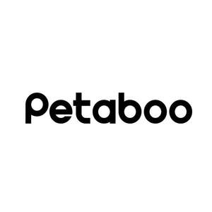

Trade Mark Journal No.2025/030 25 July 2025
UK00004234764 16 July 2025 (3,7,9,11,16,20,21,31)

- Class 3
- Shampoos for pets [non-medicated grooming preparations]; Deodorants for pets; Joss sticks; Balms, other than for medical purposes; Air fragrance reed diffusers; Air fragrance preparations; Shampoos for animals [non-medicated grooming preparations]; Pet stain removers; Pet odor removers; Non-medicated pet shampoos; Non-medicated mouth washes for pets.
- Class 7
- Shearing machines for animals; Hair cutting machines for animals; Hair clipping machines for animals; Shears, electric; Scissors, electric; Vacuum cleaner hoses; Vacuum cleaners; Vacuum cleaner bags; Suction nozzles for vacuum cleaners; Brushes for vacuum cleaners; Hand-held vacuum cleaners; Wet and dry vacuum cleaners; Electronic feeders for animals; Clippers for use on animals [machines]; Grooming machines for clipping animals hair.
- Class 9
- Apparatus for recording distance; Protective goggles; Sensors for determining temperature; Sensors for determining position; Electronic measurement sensors; Distance sensors; Indicator lights [for telecommunication apparatus]; Safety signs [luminous]; Electric light switches; Warning lights [beacons]; Emergency warning lights; Flashing safety lights; Electronic control gears [ECGs] for LED lamps and light fixtures; Warning lights [flashing beacons]; Animal signalling rattles for directing livestock; Electronic collars to train animals; Sensors [measurement apparatus], other than for medical use.
- Class 11
- Air dryers; Air driers; Hair dryers; Air purifying apparatus and machines; Animal feed drying apparatus; Animal feed drying installations; Heating pads, electric, not for medical purposes; Hot air apparatus; Drying apparatus; Drying apparatus and installations.
- Class 16
- Garbage bags of paper or of plastics; Plastic bags for disposing of pet waste; Scoops made of card for the disposal of pet excrement; Plastic bags for pet waste disposal; Labels of paper or cardboard.
- Class 20
- Beds for household pets; Kennels for household pets; Nesting boxes for household pets; Pet cushions; Cushions for lining pet crates; Scratching posts for cats; Dog houses [kennels]; Cat baskets; Animal housing and beds; Furniture for doors [non-metallic]; Pet furniture; Pet grooming tables; Playhouses for pets; Beds for pets; Cat trees; Cat/dog flaps not of metal or masonry; Dog baskets; Dog tags, not of metal.
- Class 21
- Animal-activated pet feeders; Automatic litter boxes for pets; Combs for animals; Brushes for grooming pet animals; Automatic pet feeders; De-shedding combs for pets; Electric pet brushes; Electronic pet feeders; Household containers for storing pet food; Cat litter pans; Litter boxes for pets; Litter boxes [trays] for pets; Non-mechanized pet waterers in the nature of portable water and fluid dispensers for pets; Pet feeding and drinking bowls; Litter scoops for use with pet animals; Pet lick mats; Pet paw cleaners, non-electric; Pet grooming glove; Pet treat jars; Pet feeding dishes; Plastic containers for dispensing drink to pets.
- Class 31
- Sanded paper [litter] for pets; Aromatic sand [litter] for pets; Pet food; Sand for pet toilets; Grains for animal consumption; Animal litter; Animal litter for cats; Sanded paper for use in animal cages.
Shenzhen Petaboo Technology Co., Ltd.
Representative: ZC IP LIMITED